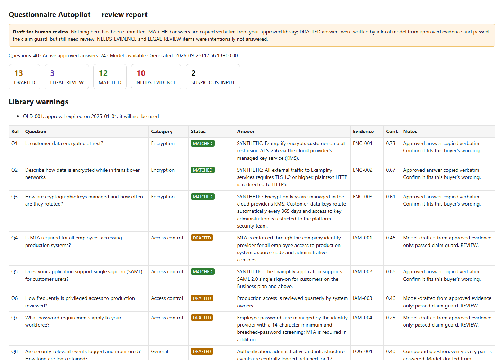

Is customer data encrypted at rest?
Approved answer copied · Evidence ENC-001
Questionnaire Autopilot 1.0
Turn the answers your team has already approved into a review-ready draft. Questionnaire Autopilot runs on your computer, cites the evidence behind every answer, and leaves the guesswork out.
Approved answer copied · Evidence ENC-001
Related evidence found · Review required
No approved evidence · No answer generated
Contract language · Routed to a person
Illustrative output using the included fictional sample company.
Local by design. Questionnaire data stays on the machine running the tool.
Evidence first. Unsupported certifications, numbers, and security claims are blocked.
Human at the finish line. The tool prepares the work. Your team approves what gets sent.
A cleaner first pass
Most questionnaires mix routine repeats with genuine gaps and legal questions. Questionnaire Autopilot separates them, so your reviewer can focus instead of hunting through a spreadsheet.
Your original CSV or XLSX structure, filled where approved evidence supports an answer. Each row carries a status, source IDs, references, and confidence.
Legal items first, then blocked inputs, evidence gaps, and drafts. Routine matches stay out of the way.
A practical to-do list of questions your current library cannot support—without filler answers.
A single HTML report that opens in a browser and makes handoff to a reviewer straightforward.
How it works
No new portal to maintain. No customer data to upload. Start with the files your team already has.
Check the requirementsAdd the answer text, its evidence reference, who approved it, and when it expires. Recent completed questionnaires are usually the best starting point.
Point the tool at a CSV or XLSX file. It detects the question column, matches approved material, and classifies everything else.
python -m sqautopilot run incoming.xlsx --library answers.csvOpen the report, work through the queue, and make the final call. Questionnaire Autopilot never submits a response for you.
Real product output
The included offline report shows what matched, what needs evidence, and what belongs with legal. This screenshot uses synthetic data for the fictional company “Examplify Inc.”

Deliberate guardrails
Security questionnaires are representations about your company. The product is intentionally conservative when the evidence runs out.
Certifications, audit status, encryption details, incident history, and unsupported numbers are blocked.
Every evidence ID must exist in the approved library before it can appear in a draft.
Optional AI drafting only accepts a model running on the same computer. Evidence-only mode needs no model.
Liability, indemnity, and interpretation of law go directly to human review.
Your organization reviews, approves, and sends every response.
Before you start
Python 3.10 or newer. Core features use the standard library.
Install openpyxl when you need Excel input and output.
Matching, gaps, routing, and review work without any AI model.
Includes a 17-check self-test and synthetic sample files.
Simple licensing
Use Questionnaire Autopilot across your organization. Version 1.x updates are included, with no recurring fee.
$99
Secure checkout, tax, and delivery are handled by Lemon Squeezy, our merchant of record. Read our 14-day refund policy.
Straight answers
No. Load the questionnaire your customer sent you. The tool works with spreadsheets that contain a question column; third-party questionnaire content is not bundled.
No. Matching, evidence gaps, legal routing, and the review queue work without one. A local model is optional and only adds evidence-grounded draft answers.
No. The product has no account, telemetry, or hosted service. Its optional model connection is restricted to the same computer.
Intentionally, no. When approved evidence cannot support an answer, the row is marked as a gap. Legal questions and suspicious spreadsheet content are routed for review.
No. It is a drafting and review tool. Your organization remains responsible for each answer it approves and sends.
Talk to a person
Write to contactprautof@gmail.com. Include your operating system and any error message if you need technical help.
Email PrautoForge